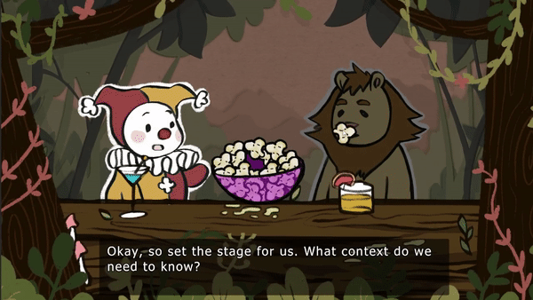
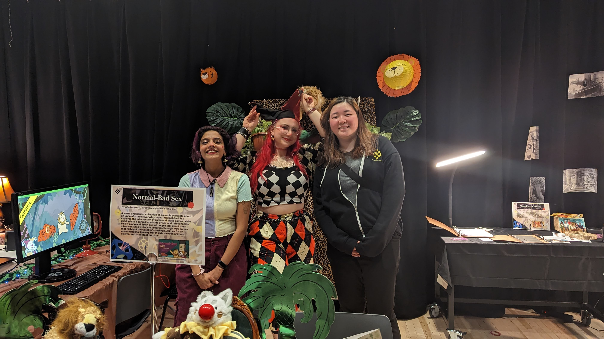
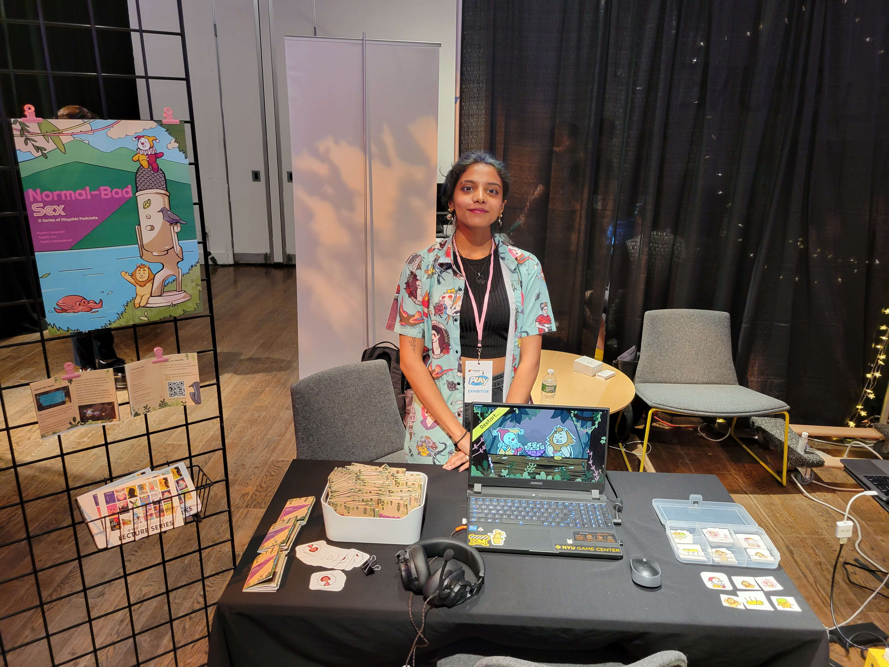

Normal-Bad Sex
The brief
Normal-bad sex is the category most of us have a story in and no vocabulary for. It’s the sex that was negative but not traumatic, the night that stays with you for a long time because you can’t quite name what went wrong. It doesn’t come up at brunch. It rarely comes up at all.
Normal-Bad Sex is a collection of playable podcasts that gives that category a place to land. Each episode pairs a real interview, recorded with someone who has already sat with what happened, alongside a small set of mini-games that don’t dramatise what’s being said. The mechanics highlight the speaker’s emotion. The story stays theirs.
It was conceived and co-designed with Nyusha Iampolski and Sophie Chu at NYU Game Center, and funded by an NYU grant. The first episode is a story about a birthday, a partner, and a night that ended up further from what was consented to than anyone at the table quite noticed at the time. It is the proof of concept for the collection.
The approach
The first decision was an abstraction. The speaker is real; the scene isn’t. Characters appear as personified animals in a jungle, they keep their human attributes, but soft shadows and popsicle-stick handles let the whole thing read like a lighthearted puppet show. The mini-games mirror what the speaker felt, not what she did.
The second was about pacing. No fail states, no time pressure, no forced progression. Audio auto-plays; mini-games are slow and easy; a Continue button waits until the player is ready. The mechanical reference was Wario-Ware, one verb, top-left of the screen, no instructions, no friction, sitting on top of an oral-history soundtrack.
Under all of it, one rule: talking about this doesn’t need to be life or death. The story is the centre of gravity. The game is a way to keep your hands and your attention on it.
Talking about this doesn’t need to be life or death.Design principle we kept coming back to
The work
I built most of the game-side systems for the first episode, the menu, the bar-scene active-listening loop, the pattern each mini-game follows, and the UI that hands the player back into the story afterwards. On the art side, I made mini-game art and spliced the interview audio to fit the beats we found while designing it.
The title sequence opens as a small motion piece I made in After Effects, and resolves into the in-game menu where everything else is animated directly in Unity. The handoff is invisible, the player just sees the title settle into the world.
Between mini-games, the player sits at a bar with the speaker, or a jungle stand-in for the speaker, and listens. To keep the hands busy without pulling focus, I added a popcorn loop: click, eat, click. Active listening, on purpose. When the story hits a beat that wants a game, the scene shifts and a single verb appears in the corner. When the mini-game ends, the bar comes back, and the audio keeps rolling.

The mini-games are emotional, not literal. Each one is a small interaction that mirrors how the speaker felt at a given moment, not what she did. A birthday box you unwrap, over and over, until the label finally reads something you didn’t ask for. A kissing scene where the kisses land everywhere except the mouth. A toll booth you feed a coin to. Wario-Ware timing, oral-history subject matter.
.gif)
.gif)
.gif)
.gif)
.gif)
.gif)
Every episode starts as an interview. Nyusha records it and cleans the audio; we transcribe it together and edit the text down to the shape we want to tell. Then a second pass: we edit the audio to match the trimmed text, and start pulling verbs out of the transcript, moments where the speaker’s feeling would map cleanly onto a single gesture. Those become the mini-games. Everything after is implementation, playtesting, and tightening.
Four things came out of playtesting and stuck. The bar scenes got added to give the story-to-gameplay handoff a shape. A Continue button went between every mini-game, so the player picks the pace instead of the game. Any literal depictions of NSFW events got pulled, so the mechanics stay about the feeling and the player isn’t stuck watching a puppet enact something they came here to reflect on. And the popcorn stayed, because it turned out to quietly do the work of keeping people leaned in while somebody else was talking.
Episode two is about aging. The interview is with a woman in her seventies recounting her sexual life across the decades, and the game is structured around that, each decade is laid out as a different road in New York City. To populate the streets, I built a procedural building generator that produces normal buildings across a stretch of road. Then a smaller set of hand-authored custom buildings gets dropped in at the key story beats: landmarks designed to read clearly against the generated surroundings, so the player notices when the road is about to turn. The gameplay lives in that contrast, long stretches of similar-but-not procedural cityscape, then a building that feels deliberately different, and the interview audio shifts to match.

How it landed
Funded by an NYU grant. Episode one shipped as the proof of concept and was shown at GDC 2023 and Play NYC 2023; episode two is in development.
What we learned along the way: being sensitive but direct with a delicate topic is possible, listening can be a participatory act, and Fungus is a lot of engine to fight. What we’d do next time: shorter audio, longer games, keep experimenting with the format.
The collection sits in a niche it built for itself, somewhere between an audio essay, a small game, and a long conversation in a quiet room. People keep finding it, and they keep finding their own story inside it.


Credits
Team
Nyusha Iampolski · concept, engine / code, interview, audio
Swathi Sambasivam · UI, mini-game art, audio
Sophie Chu · character portraits, mini-game art, promo materials (Episode 1)
Eugene An · supporting location art (Episode 2)
Tools
Unity · C#
Fungus
After Effects
Procreate · Audio editing
Thanks to Naomi Clark, Lawra Clark, Mattie Brice, Danny Hawk, Clara Fernandez-Vara, Shawn Pierre, Chros Wang, Eva Maldonado, Lee McGirr, Jude Pinto, every playtester, the MFA classes of 2022, 2023, and 2024, the Fungus Discord, and our therapists.